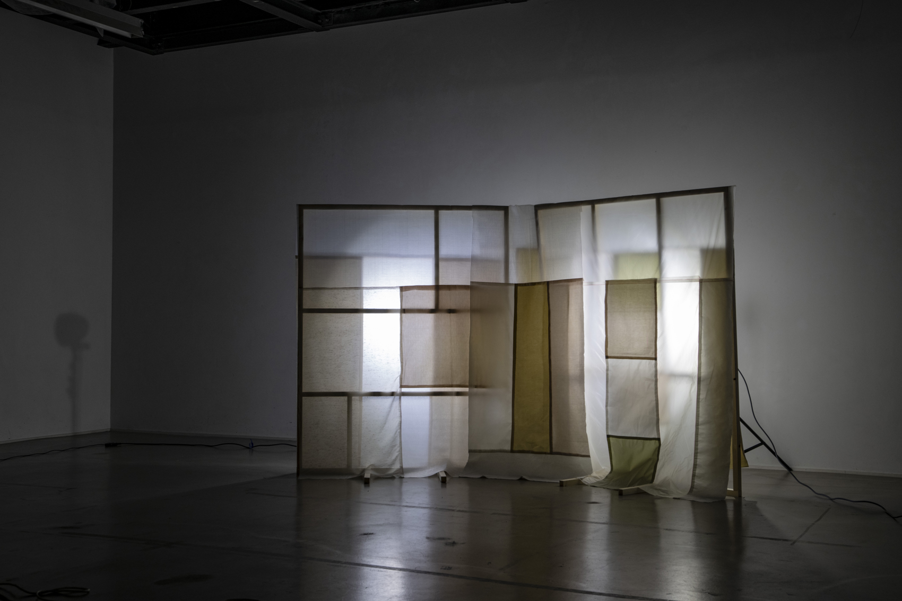

En collaboration avec → Mathilde Garcia
« RIDAX » est une installation mobile qui met en relation le textile, la lumière et la composition graphique. Nous avons conçu une structure en bois dessinée selon une grille de mise en page. À la façon d'un pled, un assemblage textile vient recouvrir cette dernière pour, en d'autres termes, l'habiller. La composition du textile est elle aussi construite selon une grille, offrant une deuxième lecture par la transparence. Après différents tests de composition de couleurs, nous avons choisis de combiner différentes nuances de blancs. De cette façon, les jeux de lumière sont plus marqués et la transparence se fait valoir. Une scénographie pourrait être envisagée à partir de « RIDAX ».